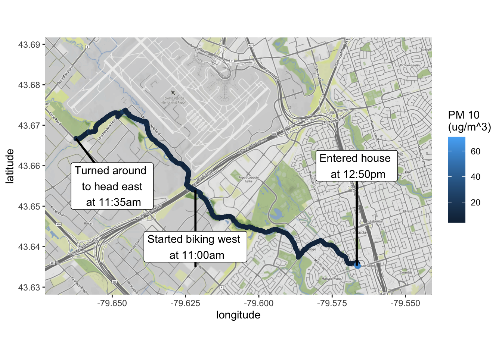
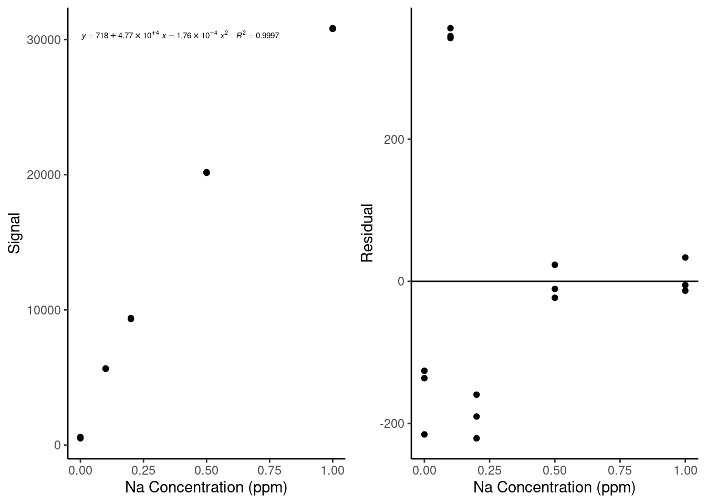
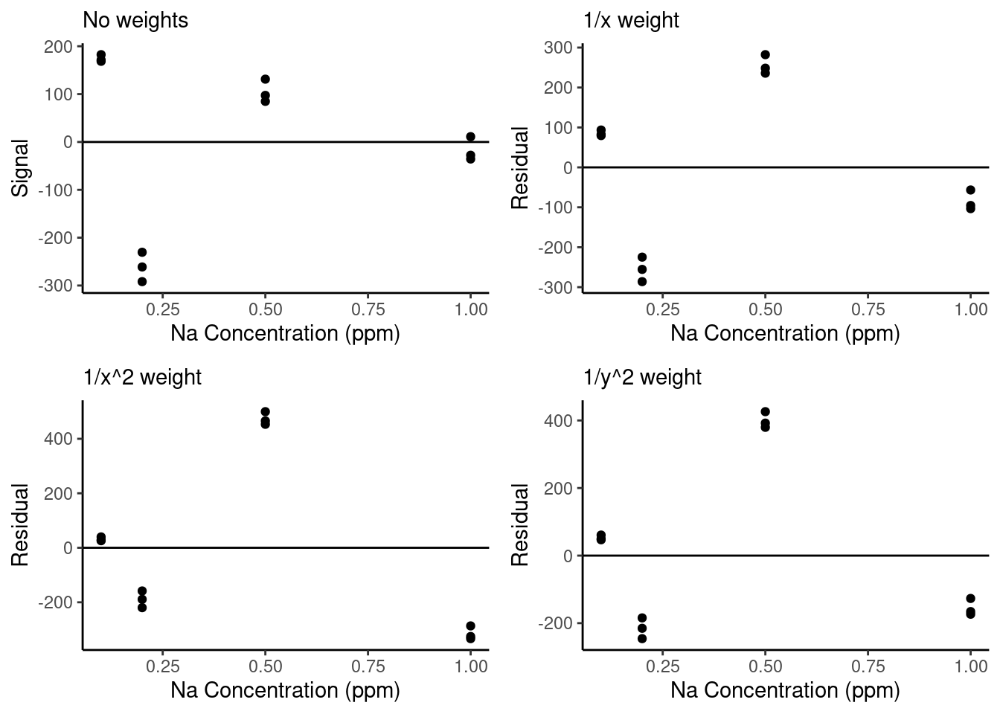
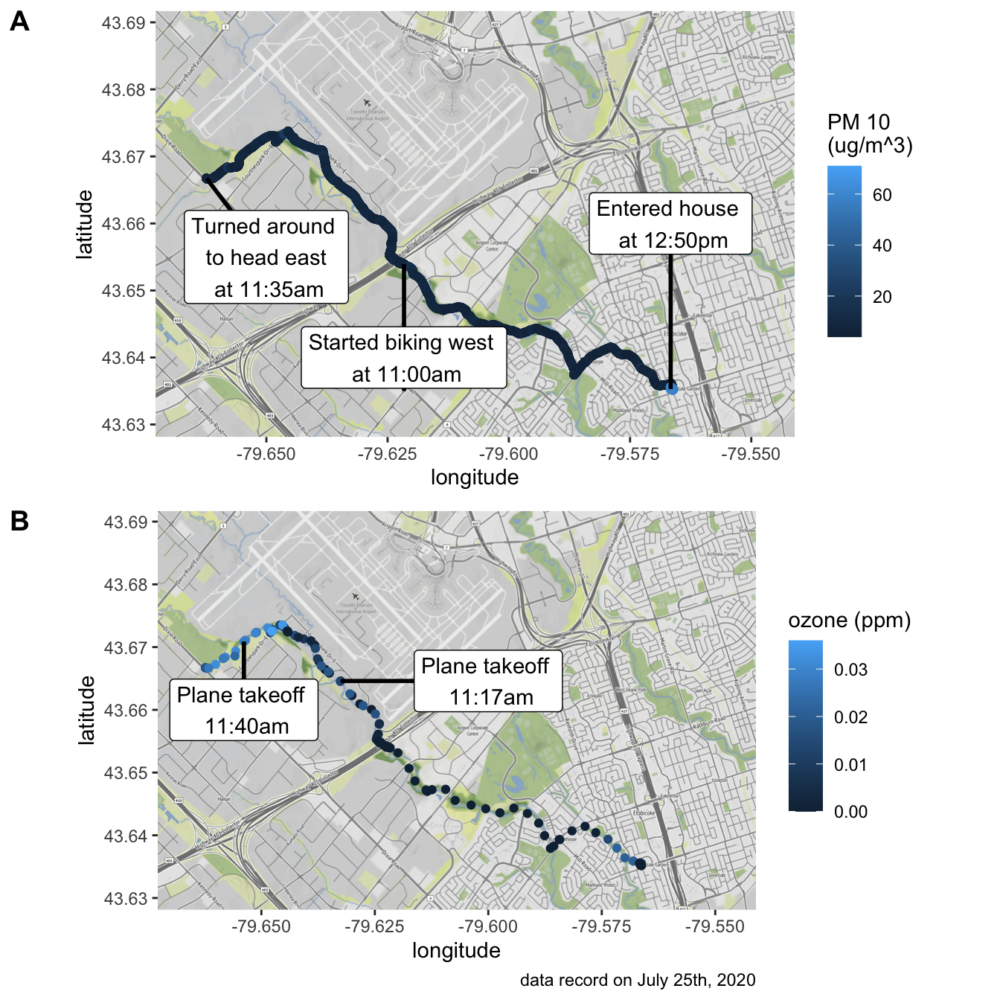
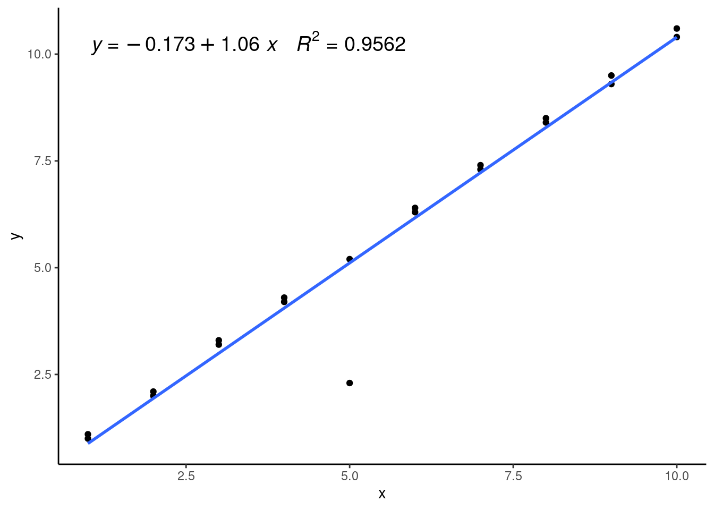
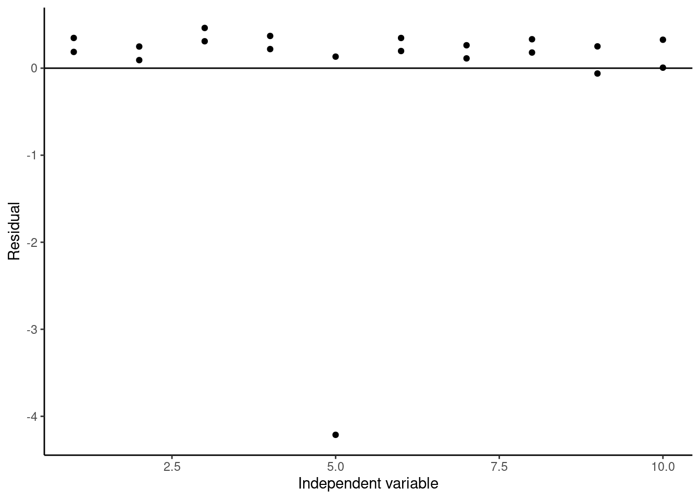
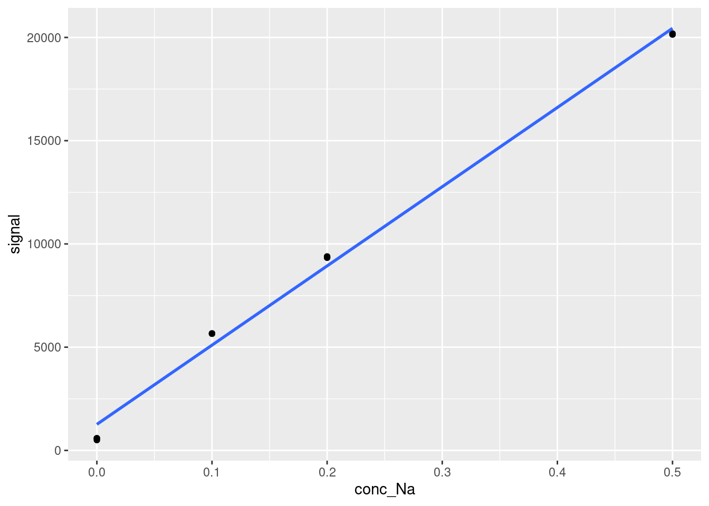

Chapter 20 Evaluating and Improving Model Performance
In this chapter, we will be discussing methods to evaluate model performance and eventually generate more effective models in R, again in the context of calibration curves in analytical chemistry. As in the previous chapter, we will be using the FAES dataset to demonstrate these concepts. Here is a reminder of what that data looks like:
library(tidyverse)
library(broom)
#Load the data file
FAES <- read_csv(file = "data/FAES_original_wide.csv") %>%
#Pivot the data into long (i.e. tidy) format
pivot_longer(cols = -std_Na_conc,
names_to = "replicate",
names_prefix = "reading_",
values_to = "signal") %>%
#Clean up the data columns
separate(col = std_Na_conc,
into = c("type", "conc_Na", "units"),
sep = " ",
convert = TRUE) %>%
mutate(type = "standard")
#Output a html-friendly data table
DT::datatable(FAES)And, as always we visualize the data before attempting any modelling:

20.1 Residuals for Model Appropriateness
The residuals of a model are defined as the difference between a measured and fitted value at each datapoint. We briefly showed them last chapter, but they are actually far more important to this modelling framework than we have given them credit for. In the least-squares method we are using for linear modelling, the goal of the model is actually to minimize the sum of the squares of the residuals.
However, the residuals also have some additional uses beyond defining the goal of our model fitting algorithm, which we will explore here. The basic idea is that the residuals can show patterns in the underlying data that the model we use doesn’t capture. If a model is missing that pattern, that might mean that our model is not the best option. To assess this, we visualize our residuals after making our models. Below are some examples of what these kinds of visualization will look like in the context of a linear calibration curve.
Figure 20.1: Example residual patterns; figure adapted from Hibbert and Gooding (2006).
A good linear (or any) model will have residuals normally distributed about zero, shown in the upper left-hand corner below. The remaining examples show other types of patterns you might see when plotting residuals. The upper right-hand example shows residuals with a quadratic trend, indicating that there is nonlinearity in our data that the model used does not capture. The lower left-hand example shows increasing magnitude of the residuals, which is indicative of heteroscedasticity in our data, meaning the magnitude of the uncertainty in each data point is changing as the concentration changing This is a problem because one of the assumptions of the model fitting process is homoscedasticity (i.e. the magnitude of error is the same for each data point). Finally, in the lower right-hand corner, we can identify an outlier in the data based on the residual plot. We will discuss how to fix the other two issues in later sections, but first let’s generate a residual plot for our own data.
We start by developing our linear model as we did last chapter:
#Generate a linear model between conc_Na and signal
lmfit <- lm(signal ~ conc_Na, data = FAES)
lmfit##
## Call:
## lm(formula = signal ~ conc_Na, data = FAES)
##
## Coefficients:
## (Intercept) conc_Na
## 2615 29707We can extract the residuals of this model two different ways. First is the built-in method using the resid function:
## 1 2 3 4 5 6
## -2112.78035 -2023.34265 -2033.66065 70.50554 67.72194 81.60224
## 7 8 9 10 11 12
## 836.86322 806.13232 775.49632 2718.19878 2671.80698 2684.28108
## 13 14 15
## -1524.59609 -1485.76569 -1532.46299However, as always Tidyverse has a nicer way of doing it. Recall the augment function within the broom library that we discussed in the previous chapter. Along with some other outputs, it provides a well-organized dataframe containing residuals and standardized residuals. Let’s look at that output again here:
#Generate the augmented dataframe
augmented <- augment(lmfit)
#Output an html-friendly table of the augmented results
DT::datatable(augmented, options = list(scrollX = TRUE))It is useful to have this information pre-organized into a dataframe, as it makes for easy plotting. Let’s try plotting the residuals (stored as .resid in the augmented dataframe) against our independent variable, the known concentration of Na in these standards (stored as conc_Na), along with a straight horizontal line at zero for comparison. We are doing this with the residuals themselves, but you could also plot the standardized residuals (this just means they are normalized by the mean and standard deviation of the residuals) or the Cooks Distance - each is a different but valid way of representing the model error as a function of the independent variable. We also draw the calibration curve itself for comparison:
#Plot the residuals of the linear model (in .resid) vs concentration
resid <- ggplot(data = augmented,
aes(x = conc_Na, y = .resid)) +
geom_point() +
geom_hline(yintercept = 0) +
labs(x = "Na Concentration (ppm)", y = "Residual") +
#theme_classic() makes the plot look a little nicer
theme_classic()
#Plot the calibration data with a calibration curve overlaid on top
cal <- ggplot(data = augmented,
aes(x = conc_Na, y = signal)) +
geom_point() +
labs(x = "Na Concentration (ppm)", y = "Signal") +
theme_classic() +
geom_smooth(method = 'lm', se=FALSE) +
ggpmisc::stat_poly_eq(formula = y ~ x, # formula uses aesthetic names
rr.digits = 4, # reported digits of r-squared
aes(label = paste(after_stat(eq.label), after_stat(rr.label), sep = "~~~")),
parse = TRUE, size = 2)
gridExtra::grid.arrange(cal, resid, ncol = 2, nrow = 1)
Based on this plot, we can see that our data has a pretty clear nonlinear trend - the residuals look like a parabola. This indicates that we might have some nonlinearity in our standard curve, likely due to nonlinearity in the instrument response. We can also see how much easier it is to spot that trend in the residual plot than it is in the original calibration curve plot.
It is always a good idea to plot residuals after making a model to check how well your model is performing and to see if there are ways you could improve your results. Next, we will discuss ways to modify our calibration models to improve their performance.
20.2 Nonlinear Calibration Curves
If you plot your residuals for a linear model and they have a clear curvature (see the top right example at the start of the section 20.1), the next step is to try a nonlinear model, the most common and useful of which is the second-order polynomial. Many instruments in analytical chemistry have a nonlinear response profile once you reach a certain concentration, at which point the response follows a quadratic curve. This is particularly common in LC-MS analysis as so much of an analyte is being ionized and detected that it suppresses some ionization and/or reduces the detector response. It is easy to create quadratic calibration curves in R - in fact, we can use exactly the same function as we used for a linear model, with just a slight adjustment:
#Generate the quadratic model using the lm function
quadFit <- lm(signal ~ conc_Na + I(conc_Na^2), data = FAES)
quadFit##
## Call:
## lm(formula = signal ~ conc_Na + I(conc_Na^2), data = FAES)
##
## Coefficients:
## (Intercept) conc_Na I(conc_Na^2)
## 717.6 47698.6 -17613.3Here, we must put the second-order term (conc_Na^2) within the I function, which tells R to read the term conc_Na^2 “as-is”, allowing R to understand that we mean we want this term to be squared instead of treating it as code. The output coefficients have names that are a little difficult to read, but the (Intercept) is the intercept, conc_Nais the linear term, andI(conc_Na^2)` is the quadratic term.
As with the linear model, we can plot the fitted model over our data and extract the residuals. Let’s do that now to compare our results. Note that this time, we have to provide the formula for geom_smooth to use, and for the purposes of stat_poly_eq, we have to use the poly(x,2,raw=TRUE) syntax instead of using the I function to allow it to interpret the equation correctly. Also, when we extract the residuals using the broom augment function, we resupply the original dataset FAES. This is because augment will otherwise try to reconstruct the original dataset, splitting conc_NA into a linear and quadratic term, which will get messy.
#Generate the augmented summary of the quadFit model on the FAES dataset
quadAugmented <- augment(quadFit, FAES)
#Plot the calibration curve with a quadratic model overlaid on top of it
cal <- ggplot(data = quadAugmented,
aes(x = conc_Na, y = signal)) +
geom_point() +
labs(x = "Na Concentration (ppm)", y = "Signal") +
theme_classic() +
geom_smooth(method = 'lm', formula = y ~ conc_Na + I(conc_Na^2), se=FALSE) +
ggpmisc::stat_poly_eq(formula = y ~ poly(x, 2, raw=TRUE), # formula uses aesthetic names
rr.digits = 4, # reported digits of r-squared
aes(label = paste(after_stat(eq.label), after_stat(rr.label), sep = "~~~")),
parse = TRUE, size = 2)
#Plot the residuals of the quadratic model
resid <- ggplot(data = quadAugmented,
aes(x = conc_Na, y = .resid)) +
geom_point() +
geom_hline(yintercept = 0) +
labs(x = "Na Concentration (ppm)", y = "Residual") +
theme_classic()
gridExtra::grid.arrange(cal, resid, ncol = 2, nrow = 1)
This is definitely looking better! The magnitude of the residuals has decreased by an order of magnitude.
To use a quadratic calibration curve to calculate new concentration values, we cannot just solve for x in the calibration curve equation - we must plug in our ‘y’ value, subtract it from our intercept to get an expression equal to zero and use the quadratic equation to solve for the roots of x. Alternatively, an inverse calibration curve can be constructed - this will be discussed in a later section.
We will discuss more about how to decide whether a quadratic or linear model is better in a later section, but for now, notice how the residuals still have a shape - let’s try to fix that using another modeling trick.
20.3 Weighted Calibration Curves
If you run into residuals with a ‘cone’ shape, such as in the bottom-left of the examples in section 20.1, you have data that are heteroscedastic. The best solution to this issue is to develop a weighted model. Weighting a calibration curve (or any model) is the process of applying a multiplicative factor to each data point during the modeling process. The goal of this process (assuming data collected perfectly with normally distributed, predictable errors) is to normalize the residuals of each data point collected, such that no data point has undue influence over the model.
There are actually two situations where weighting a model is particularly helpful: The first is what we just discussed, as weighting can solve the problem of heteroscedasticity by reducing the reliance of the model on data with larger uncertainties. If a the weighting scheme is chosen such that:
\[w = \frac{1}{\sigma^2}\] Where \(w\) is the weight and \(\sigma\) is the standard deviation of our dependent variable (recall that standard deviation is the square root of the variance), then the error associated with each data point is normalized out and the model can be fit accurately. Practically, the variance of data is rarely known, so instead we use one of several weighting schemes related to our observations, such as:
\[w = \frac{1}{y^2} \ \ \ OR \ \ \ w = \frac{1}{x^2} \ \ \ OR \ \ \ w = \frac{1}{x} \ \ \ OR \ \ \ w = \frac{1}{s(y)^2}\]
Where \(x\) and \(y\) are the independent and dependent variables of the model respectively, and \(s(y)\) is the experimental standard deviation of the dependent variable. The first three options assume that the standard deviation or variance of the dependent variable (in this case instrument signal response) is proportional to either the dependent or independent variables. The final option does not make this assumption, but it requires averaging replicates, resulting in fewer data points for regression.
The second area where weighting can help is when a calibration curve spans a large range of concentrations. When this happens, the fitting algorithm based on the squares of the residuals starts to consider higher concentrations more than lower concentrations because the residuals of those values tend to be higher if the model does not pass close to them. To correct for this issue, the \(1/x\) weighting scheme is generally quite effective.
There is no all-purpose answer for what weighting scheme to use - this is an area where you will have to use your judgement, and maybe try multiple options to see what gives you the best-performing model. Generally speaking, if you are more concerned about heteroscedasticity in your results (maybe you plotted your residuals and the magnitude of the residuals is increasing), then the \(1/x^2\) or \(1/y^2\) (or \(1/s(y)^2\) if you have a measurement of standard error) options are good. If you just want to correct for your calibration crossing multiple orders of magnitude, use the \(1/x\) scheme.
For the purposes of our quadratic calibration curve example, the magnitude of the residuals is not increasing with respect to concentration - it looks more like the model is doing a better job at higher concentrations than lower ones. That sounds like the second case where weighting is useful, so in practice the \(1/x\) scheme is probably our best bet. However, for illustrative purposes we’ll try all of the first three weighting schemes to compare them. Here is how you add weights to a model in R. Note that we have to remove concentrations of 0, as a 1/x weight would be infinite for these points, and we also will recalculate the unweighted calibration curve without these points for comparison. We also use the cbind function, which binds together a set of columns into a dataframe:
#Removing standard with concentrations = 0 (our blanks)
FAESweighted <- FAES %>%
filter(conc_Na > 0)
#Re-calculating an unweighted quadratic model
unweightedCal <- lm(signal ~ conc_Na + I(conc_Na^2), data = FAESweighted)
#Weighted quadratic model with a 1/x scheme
weighted1overxCal <- lm(signal ~ conc_Na + I(conc_Na^2), data = FAESweighted, weights = 1/conc_Na)
#Weighted quadratic model with a 1/x^2 scheme
weighted1overx2Cal <- lm(signal ~ conc_Na + I(conc_Na^2), data = FAESweighted, weights = 1/conc_Na^2)
#Weighted quadratic model with a 1/y^2 scheme
weighted1overy2Cal <- lm(signal ~ conc_Na + I(conc_Na^2), data = FAESweighted, weights = 1/signal^2)
#Bind together a 'term' column and the coefficients of the different models produced above as separate columns with specified names based on their weighting scheme
compareFits <- cbind("term" = c("Intercept", "x", "x^2"), "unweighted" = tidy(unweightedCal)$estimate, "1/x" = tidy(weighted1overxCal)$estimate, "1/x^2" = tidy(weighted1overx2Cal)$estimate, "1/y^2" = tidy(weighted1overy2Cal)$estimate)
DT::datatable(compareFits, options = list(scrollX = TRUE))You can see how the results, particularly in the quadratic term, are somewhat different depending on the weighting scheme. The weighted models are deemphasizing the higher concentration points, resulting in a lower magnitude of the quadratic term.
Finally, let’s look at the residuals for these three weighting schemes vs. without a weighting scheme:

We can see that the weighted residual plots are a little more normally distributed than the unweighted curve and that with the stronger weights (\(1/x^2\) and \(1/y^2\)), the residuals of the lowest concentration points are closer to zero. However, we will need to do additional analysis to determine whether weighting has meaningfully improved our model performance. We will talk about that next.
There is one major caveat when using weighted fits with approximate weights as we are doing here: The standard errors reported by the model outputs become inaccurate. This is because when you include weights, they are incorporated into the equations used to calculate standard errors of the model parameters. Therefore, if your weights are estimated, your standard errors become unreliable. Keep that in mind when using weighted fits - this means that you cannot use a weighted fit to calculate results such as LOD and LOQ.
20.4 Removing outliers
Finally you visually identify an outlier within a calibration curve (or any model) by plotting your residuals as in the example in the bottom right of the plot in section 20.1, you can test whether that outlier is statistically outside the range of the model using a basic statistical test on the residuals. The dataset we’ve been working with doesn’t have any outliers (generally these are removed and rerun prior to making calibration curves), so let’s work with a simple toy dataset similar to the one used to generate the example outlier residual plot:
#Generating a toy dataset
residData <- data.frame("x" = c(1,1,2,2,3,3,4,4,5,5,6,6,7,7,8,8,9,9,10,10),
"y" = c(1.0,1.1, 2.0,2.1, 3.3,3.2, 4.2, 4.3, 5.2, 2.3, 6.3,6.4, 7.3,7.4, 8.4, 8.5, 9.3,9.5, 10.4,10.6))
ggplot(data = residData,
aes(x = x, y = y)) +
geom_point() +
theme_classic()
We can see we have a pretty clear outlier at x = 5, but otherwise our data seems pretty linear. Here’s what it would look like if we added a linear model to this data:
#Generating a linear model on the toy dataset
lmWithOutlier <- lm(y ~ x, data = residData)
#Plotting the generated model over the data
ggplot(data = residData,
aes(x = x, y = y)) +
geom_point() +
theme_classic() +
geom_smooth(method = 'lm', se=FALSE) +
ggpmisc::stat_poly_eq(formula = y ~ x, # formula uses aesthetic names
rr.digits = 4, # reported digits of r-squared
aes(label = paste(after_stat(eq.label), after_stat(rr.label), sep = "~~~")),
parse = TRUE, size = 5) 
We can see that the linear model isn’t fitting any of our datapoints that well and has a relatively low \(R^2\) value. This is because it’s being pulled down or leveraged by the outlier, which is called a high-leverage point. We can see this well in the residual plot:
ggplot(data = augment(lmWithOutlier),
aes(x = x, y = .resid)) +
geom_point() +
geom_hline(yintercept = 0) +
labs(x = "Independent variable", y = "Residual") +
theme_classic() 
Again, we can clearly see the outlier at x = 5. To test whether this point is really an outlier, we can use studentized residuals, which are called standardized residuals when calculated using the broom augment function. These studentized residuals are calculated by normalizing to the standard error of the model with the data point being calculated removed, and they are often used to identify outliers in datasets used for regression. The rule of thumb is if the absolute value of the studentized residual is greater than 3, then that data point is likely an outlier. If we plot the studentized residuals here:
#Plotting studentized residuals of the model
ggplot(data = augment(lmWithOutlier),
aes(x = x, y = .std.resid)) +
geom_point() +
geom_hline(yintercept = 0) +
labs(x = "Independent variable", y = "Residual") +
theme_classic() 
We see that our studentized residual for our suspected outlier is less than -4, so we can conclude it is a likely outlier, and it is probably better to remove it when creating our calibration curve.
20.5 Evaluating Model Performance
Often, we will run into a situation where we have multiple possible models we can create, and we want to decide which of them is the best for our purposes. For calibration curves, this might mean that we want to compare a linear vs. nonlinear calibration curve or a weighted vs. unweighted calibration curve. So far, we have done so by comparing the shapes of the resulting residual plots, but this can become subjective and unclear in many cases. By performing the modeling in R, you have access to a variety of quantitative tools to compare models. A few of these options will be discussed in this section.
20.5.1 Choosing the best model
Let’s start by performing this analysis of which model is best on our example dataset. Say we want to start by deciding whether our linear model or quadratic model is the better choice. We will also add in a cubic function for illustrative purposes. We start by constructing these models, and then we will make use of the broom glance function to compare several goodness-of-fit measurements between the two models. We also use the rbind function to bind together the single-rowed glanced outputs into a single multi-row table with defined row names:
#Generating a linear model
linear <- lm(signal ~ conc_Na, data = FAES)
#Generating a quadratic model
quadratic <- lm(signal ~ conc_Na + I(conc_Na^2), data = FAES)
#Generating a cubic model
cubic <- lm(signal ~ conc_Na + I(conc_Na^2) + I(conc_Na^3), data = FAES)
#Binding together the glanced outputs of the three models rowwise into a single dataframe
glanced <- rbind("linear" = glance(linear), "quadratic" = glance(quadratic), "cubic" = glance(cubic))
DT::datatable(glanced, options = list(scrollX = TRUE))Let’s go through what these results tell us. - We will ignore the first value, the multiple \(R^2\), as this value will strictly increase as we add more parameters into the model. - A more useful measure of goodness of fit is the adjusted \(R^2\) value, which is a measurement of how much of the variance in our dependent variable this model captures. We can see that from the linear to quadratic model, there is a significant improvement, while there is actually a slight decrease in adjusted \(R^2\) between the quadratic and cubic model. This evidence supports using the quadratic model. - Comparing the F-statistic and p-value of the three functions, we can see that the quadratic fit has the lowest p-value, followed by the cubic and then the linear model. Again, this supports using the quadratic model. - Finally, the AIC (Akaike Information Criterion) and BIC (Bayesian Information Criterion) are parameters that evaluate the relative quality of different models applied to the same set of data. Technically speaking, they are measurements of the amount of information lost in the models we are generating relative to underlying the process used to generate the data. A lower AIC/BIC indicates that less information is lost when using this model. For our models, we can see that the quadratic model has the lowest AIC and BIC, followed by the cubic model, then the linear model. These parameters also support using the quadratic model.
There is one other test you can try to compare different models like this, which is specifically useful when deciding whether to include an extra term in a model or not - the p-value of each specific fit parameter. These are accessible directly from the summary function or in the broom tidy function. Recall the tidy format of models in R for the cubic model:
#Generate the tidied summary of the cubic model
tidycubic <- tidy(cubic) %>%
#replace the 'term' column with more legible values
mutate(term = c("Intercept", "x", "x^2", "x^3"))
DT::datatable(tidycubic, options = list(scrollX = TRUE))Looking at this table in the p.value column, we can see the p-values of a t-test of whether each parameter is statistically significantly different from zero. The intercept, first, and second-order terms have very low p-values. However, the cubic term is around 0.5, much too high, indicating that the fit value of the cubic term is statistically indistinguishable from zero. This alone is grounds to reject the cubic model over the quadratic and linear models. Let’s look at the p-values of the quadratic model just to be sure:
#Generating the tidied summary of the quadratic model
tidyquadratic <- tidy(quadratic) %>%
#replace the 'term' column with more legible values
mutate(term = c("Intercept", "x", "x^2"))
DT::datatable(tidyquadratic, options = list(scrollX = TRUE))Sure enough, the p-values for all three of the terms of the quadratic model are very low, indicating that it is likely these terms are statistically nonzero in the best form of the model. Keep in mind that this test is not perfect - just because a parameter has a p-value less than some cutoff (0.05, 0.01, or even lower) does not necessarily mean that it is a useful parameter to include in your model.
The best approach in model selection is always to assemble a weight of evidence, like we have done here: The residual plot, adjusted \(R^2\), F-test p-value, AIC and BIC, and t-test p-value for the individual parameters all indicate that the quadratic model is the best fit for our data, so we can be reasonably sure that the quadratic model is the best choice in this case. The linear model appears to miss some of the nonlinearity in the dataset, while the cubic model seems to overfit the results slightly.
However, there will be situations where these parameters do not all agree, and you will have to make a judgement call about which model you want to use. A good additional factor to consider in these cases is what you want to use the model for: Are you using it to describe your data effectively to learn something fundamental about your results (say, if you want to calculate LOD and LOQ)? Or, are you more interested in using the model to best predict new outcomes? In the first case, you likely want to use the simplest possible model that explains most of your results. In the second choice, you may be okay with using a more complex model that can capture more of the nuances in your data. Therefore, the choice of the best model may vary depending on your goals.
20.5.2 To weight or not to weight?
We can also use some of these parameters describing model goodness-of-fit to compare different weighting schemes quantitatively to choose between them. Let’s try this with the four different weighted models we created earlier:
#Generate a table by binding the glanced outputs of models with different weighting schemes into a single dataframe
weightedGOF <- rbind("unweighted" = glance(unweightedCal), "1/x" = glance(weighted1overxCal), "1/x^2" = glance(weighted1overx2Cal), "1/y^2" = glance(weighted1overy2Cal))
DT::datatable(weightedGOF, options = list(scrollX = TRUE))Notice how some of the parameters such as sigma and deviance have completely different orders of magnitude depending on the weighting scheme - this is because the weights are directly used to calculate these values. However, we can still compare AIC and BIC between models, and between adjusted \(R^2\) values if we use caution. The AIC and BIC here are unambiguious - the addition of weights does not significantly increase the information gain within this model. Adjusted \(R^2\) values are a little more complicated, because they mean something different in a weighted fit vs. an unweighted fit. Recall that an unweighted adjusted \(R^2\) describes the proportion of variance in the dependent variable explained by the model regressing on the independent variable. In a weighted regression model, adjusted \(R^2\) describes the proportion of variance in the weighted dependent variable explained by the model regressed on the weighted independent variable. As such, use caution when comparing adjusted \(R^2\) between unweighted and weighted models. That being said, in this case the adjusted \(R^2\) value agrees with the AIC and BIC that the quadratic model creates the best fit on the data.
With this in mind, we would likely choose not to include weights in this particular calibration curve. However, if the results of these goodness-of-fit measurements were more ambiguous and the heteroscedasticity in the unweighted regression residuals were more obvious, you might have to use your judgement when deciding whether to weight a fit. It is often okay to add a weighting scheme to a fit even if the goodness-of-fit measurements do not support it if you believe it improves the predictive power of your calibration curve. Generally speaking, if a weighting scheme is unnecessary and you still include one, it will not significantly influence your concentrations calculated with a calibration curve, but if you need a weighting scheme and do not include one, low concentrations calculated with your calibration curve may be unreliable. Hence, many researchers choose to always include weighting schemes, even if it is not always strictly necessary.
20.5.3 Do I Need an Intercept?
You might wonder, particularly if your instrument has very low background noise, whether it is worth including an intercept within your calibration curve. It is possible to create linear and polynomial models without an intercept in R - simply add -1 to the end of the function definition within the lm function. However, you must do so with extreme caution. It is almost always better to include an intercept in a calibration curve than to remove it. If you really want to try a model without an intercept, there are three things you need to check: 1. Do your blanks support the fact that your instrument response is zero when the concentration of your analyte is zero? 2. When you generate your model with the intercept, is the intercept statistically indistinguishable from zero? 3. When you generate your model without the intercept, does it improve the model goodness-of-fit over not having the intercept?
Let’s test these three conditions for our data. We can easily test the first condition just by looking at our data:
Clearly, the signal is nonzero in our standards even when the concentration of our analyte is 0 ppm. Thus, we fail our first test. This would be enough to force us to include the intercept in our model fits normally, but we will test the other two conditions here for illustrative purposes. Next, let’s see what the p-value of our model intercept being statistically significantly different from zero says:
The p-value of our intercept here is around \(10^-5\), which is pretty definitive in indicating that we cannot ignore our intercept. Just to check, let’s create the model without the intercept:
#Generate a quadratic model without the intercept by adding '-1 to the equation
quadraticnoint <- lm(signal ~ conc_Na + I(conc_Na^2) -1, data = FAES)
DT::datatable(tidy(quadraticnoint), options = list(scrollX = TRUE))Now let’s compare the glanced versions of the model with and without an intercept:
#Binding together the glanced outputs of the two models into a dataframe to compare
interceptGOF <- rbind("With intercept" = glance(quadratic), "No intercept" = glance(quadraticnoint))
DT::datatable(interceptGOF, options = list(scrollX = TRUE))We can see based on all of our model goodness-of-fit parameters that the quadratic model with an intercept is a better fit for our data than without the intercept. Therefore, we must include the intercept in our calibration curve for this dataset.
20.5.4 Model Selection: Conclusions
So far this chapter, we have discussed a variety of tools you can use in R to improve and evaluate regression models.
- To improve a model, you can:
- Add or remove nonlinear terms to the model to capture additional complexities within the data
- Weight the model appropriately to minimize issues of heteroscedasticity and magnitude differences between different data points
- To evaluate a model, you can:
- Plot residuals of the model fit to look for additional patterns in the data, heteroscedasticity, or outliers
- Compare goodness-of-fit metrics for different models such as adjusted \(R^2\), AIC, BIC or F-statistic and its corresponding P-value.
- Test whether parameter fits are statistically different from zero to evaluate whether they improve the model
Let’s pause for a moment and discuss the practicality of all of this. Using these model evaluation and improvement tools is a lot of work for something as simple as a calibration curve, and you might wonder whether it’s even worth it to go to all of this trouble to choose the correct model. In truth, many professional scientists don’t validate their calibration curves this rigorously, and in many cases you probably won’t need to either. You may just go ahead and try a linear fit, weighted linear fit, and a quadratic fit and see which one gives you the best adjusted \(R^2\) value. That being said, it’s worth knowing how to rigorously evaluate calibration curves so that if you ever need to do so, you can.
All of the work we’ve done here is also broadly applicable beyond just calibration curves - if you need to create nonlinear models (like we will discuss next chapter) to capture real-world phenomena, these model development and evaluation tools can be far more important.
In the end, it is up to you as the researcher to choose how rigorously you need to be when constructing your models, whether it be for a calibration curve or a large, multivariable regression. That’s part of the job of a scientist!
With that, let’s move on to a couple of additional practicalities in model development that are specific to calibration curves. If you came to this chapter specifically for model development and evaluation, this is the end of that section of this chapter - feel free to skip to the conclusion.
20.6 Using Calibration Curves to Estimate LOD and LOQ
One of the most useful applications of calibration curves (beyond their usage as a calibration curve of course) is calculating the limit of detection (LOD) and limit of quantification (LOQ) of the instrument you are using. The approach we will take is defined by the International Committee on Harmonization (of Technical Requirements for Pharmaceuticals for Human Use). There are two other approaches: one based on visual evaluation and another based on directly calculating signal to noise ratio. However, using calibration curves is broadly applicable, does not require complex evaluation of chromatograms themselves, and is not prone to operator bias like visual evaluation.
Calculating LOD and LOQ from calibration curves is pretty easy! All we need is the slope and standard error of the slope of our calibration curve, both of which we already know how to calculate. The exact definitions are:
\[LOD = 3.3\frac{\sigma}{S} \ \ \ \ \ \ LOQ = 10\frac{\sigma}{S}\]
Where \(\sigma\) is the standard deviation of the response and \(S\) is the slope of the calibration curve. \(\sigma\) may be defined as either the standard deviation of the y-intercept of the calibration curve or the residual standard deviation of the calibration curve itself. In R, the standard deviation of the y-intercept is a standard output of the summary or tidy functions on a linear model. The residual standard deviation of the calibration curve can be accessed using the sigma function or in the output of the glance function under sigma. Note that in R, all model errors are called standard errors, however, in R, these standard errors actually refer to the estimated standard deviation of that variable. Hence, when the above equations call for residual standard deviation and standard deviation of the intercept, we use the values that R calls the residual standard error and standard error of the intercept.
There are two caveats. First, the calibration curve must be linear and unweighted for this to work, and it should be a relatively good fit. Often, this means that you will have to cut off higher concentrations where instrument response becomes more nonlinear and remake the calibration curve specifically for the LOD/LOQ calculation. It’s okay to only use lower concentrations for this purpose because LOD and LOQ are defined by the lower limits of the instrument. Second, it is always best practice to cross-validate the calculated values of LOD and LOQ, ideally by running standards at the calculated concentrations and visually ensuring that you can see a signal outside of the noise of the instrument.
Let’s try calculating LOD and LOQ for our example dataset now. First, we need to select the linear range that we will use to construct our calibration curve. The best way to do this is by looking at the data itself, so once again, let’s plot our original dataset with a linear calibration to see where the datapoints start deviating from linearity:
ggplot(data = FAES,
aes(x = conc_Na,
y = signal)) +
geom_point() +
geom_smooth(method = 'lm', se=FALSE)
At the very least, we need to remove the point at Na concentration = 1 ppm. Let’s remove that and check again:
limitData <- FAES %>%
#Filter out values with concentrations less than 1 ppm
filter(conc_Na < 1)
ggplot(data = limitData,
aes(x = conc_Na,
y = signal)) +
geom_point() +
geom_smooth(method = 'lm', se=FALSE)
That looks a lot better. We could also remove the point at 0.5 ppm, but even our lowest three concentrations look a little bit nonlinear, and we will get diminishing returns on the goodness of fit of the linear calibration curve as we remove more datapoints, so let’s just work with what we have above for now. Calculating LOD and LOQ now is as simple as creating our linear calibration curve and extracting the slope and residual standard deviation or standard deviation of the y-intercept. Using the broom tidy and glance outputs may be helpful here to get your information in workable form (this would be very helpful if you were generating many calibration curves for many analytes at once and want to calculate LOD and LOQ for all of the analytes). We will generate LOD and LOQ both ways here:
#Generate the linear model on our filtered data and its glanced and tidied summaries
limitsLM <- lm(signal ~ conc_Na, data = limitData)
limitsGOF <- glance(limitsLM)
limitsCoef <- tidy(limitsLM)
#Calculate the LOD based on the residual standard deviation
LODresid <- 3.3*limitsGOF[[3]]/limitsCoef[[2,2]]
#Calculate the LOQ based on the residual standard deviation
LOQresid <- 10*limitsGOF[[3]]/limitsCoef[[2,2]]
paste("For the FAES dataset, the LOD = ", LODresid, "ppm and the LOQ = ", LOQresid, "ppm when calculated using residual standard deviation.")## [1] "For the FAES dataset, the LOD = 0.0488676828127103 ppm and the LOQ = 0.148083887311243 ppm when calculated using residual standard deviation."#Calculate the LOD based on the y-intercept's standard deviation
LODyint <- 3.3*limitsCoef[[1,3]]/limitsCoef[[2,2]]
#Calculate the LOQ based on the y-intercept's standard deviation
LOQyint <- 10*limitsCoef[[1,3]]/limitsCoef[[2,2]]
paste("For the FAES dataset, the LOD = ", LODyint, "ppm and the LOQ = ", LOQyint, "ppm when calculated using y-intercept standard deviation.")## [1] "For the FAES dataset, the LOD = 0.0206503650239429 ppm and the LOQ = 0.0625768637089178 ppm when calculated using y-intercept standard deviation."The first thing you’ll notice is that the LOD and LOQ are quite different depending on which estimate of \(\sigma\) we use! This is where testing and validation come in. Ideally, you would want to run standards near these two limits of detection and see which one is actually detectable on the instrument.
You’ll notice that the LOQ using residual standard deviation is somewhat high - higher than our 0.1 ppm calibration point! This is likely because the quality of the calibration curve matters quite a lot when calculating LOD and LOQ. If you have nonlinearity or few calibration points like we have in this case, you could be artificially inflating your LOD and LOQ due to statistical, not instrumental uncertainty. If you were performing these experiments yourself, you might want to run additional standards in the 0 to 0.5 ppm region to improve the calibration curve both for better concentration calculations and to see if you end up with a lower LOD and LOQ, or just use the LOD and LOQ calculated using the standard deviation of the intercept instead if you are confident that those values are reasonable. That being said, it is always possible that you have higher than expected instrument noise, so you cannot just throw out high values of LOD and LOQ if you have a low-quality calibration curve. Instead, you would likely need to cross-validate with different method of calculating LOD and LOQ.
The general practice in environmental analytical chemistry is to report values < LOD directly as “<LOD” - i.e. not to report a quantitative value, and values < LOQ and half of the LOQ. Applying the quadratic calibration curve we calculated and evaluated earlier and the LOD and LOQ values we found here (let’s use the higher ones for illustrative purposes), we could properly calculate new concentrations for our sample dataset. First, let’s import the data and tabulate it to remind ourselves what it looks like:
FAESsamples <- read_csv(file = "data/FAESUnknowns.csv") %>%
pivot_longer(cols = -c(sample, `dilution factor`),
names_to = "replicate",
names_prefix = "reading_",
values_to = "signal")## Rows: 3 Columns: 5
## ── Column specification ────────────────────────────────────────────────────────
## Delimiter: ","
## chr (1): sample
## dbl (4): dilution factor, reading_1, reading_2, reading_3
##
## ℹ Use `spec()` to retrieve the full column specification for this data.
## ℹ Specify the column types or set `show_col_types = FALSE` to quiet this message.First, we calculate a concentration column from our quadratic calibration curve using the quadratic formula. Remember that we can use the coef function to extract coefficients of a fit into a list, and we can use base R bracket notation to extract specific values
#Extracting the coefficients of the quadratic fit
x2 <- coef(quadratic)[3]
x <- coef(quadratic)[2]
intercept <- coef(quadratic)[1]
#Calculating new concentrations using the quadratic formula (solving the fit equation for x)
FAESresults <- FAESsamples %>%
mutate(instConc = (-x + sqrt(x^2-4*x2*(intercept-signal)))/(2*x2))
DT::datatable(FAESresults)Then, let’s filter out data that is below our LOD and LOQ as follows:
FAESresultsfiltered <- FAESresults %>%
#Set instConc to LOQ/2 when its value is < LOQ and to 0 when its value is < LOD
mutate(instConc = case_when(
instConc > LOQresid ~ instConc,
instConc > LODresid ~ LOQresid/2,
instConc < LODresid ~ 0)) %>%
#Create a note that indicates whether the concentration is < LOQ or < LOD
mutate(note = case_when(
instConc > LOQresid ~ "N/A",
instConc > LODresid ~ "<LOQ",
instConc < LODresid ~ "<LOD"))
DT::datatable(FAESresultsfiltered)Notice how it has taken the tap water values and set all but one to 1/2 the LOQ - this is because we are not confident in the actual concentrations. This is artificially lowering their values, and since they’re right on the edge of the LOQ in this case, it might be better to report them as-is instead of as 1/2 the LOQ, or to use the lower LOQ value we calculated earlier using the standard deviation of the intercept. If you were reporting these values in a publication, you would flag these values as < LOQ for clarity. As before, before reporting these values you would want to correct for the dilution factor and summarize them.
20.7 Inverse Calibration Curves
So far, we have exclusively been constructing conventional calibration curves - that is, the instrument response has been the dependent variable and the known concentrations have been the independent variable. It is also possible to construct a calibration curve by inverting these two variables - i.e. you use the concentration as the dependent variable and the instrument response as the independent variable. There are two main benefits to doing it this way: First, the least squares fitting algorithm is designed to minimize error along the dependent variable axis. If we are using a calibration curve to predict new concentrations then, an inverse calibration curve which uses concentration as the dependent variable should be minimizing error in that concentration better than a conventional calibration curve. Second, the equation for an inverse calibration curve can be used directly when calculating new concentrations. This is particularly important when using nonlinear calibration curves, as it means you don’t need to solve for roots of a polynomial - you just plug in your instrument response as \(x\).
With this in mind, you might wonder why conventional calibration curves are, well, conventional. There are two main reasons. First, conventional calibration curves can be used to define and calculate LOD and LOQ as discussed above. You cannot use inverse calibration curves to calculate LOD and LOQ. Because of this fact, conventional calibration curves will always have a place in analytical chemistry. Second, when performing a least squares fit, one of the underlying assumptions is that there is no uncertainty in the independent variable, i.e. for a calibration curve the concentration of each standard is known exactly. Historically, this was generally true - analytical instrumentation tended to have larger errors than measurements made using analytical balances and glassware. In modern chemistry labs, this is not strictly true - modern instrumentation is sometimes now more precise than our solution preparation can be, and so this second factor becomes less important.
Now that you know why inverse calibration curves are convenient and why we might choose to use them, let’s generate an inverse quadratic calibration curve from our dataset and use it to calculate new concentrations directly, instead of having to use the quadratic equation. Notice how all we do is switch the variables in the lm function. We’ll also add the values from our conventional calibration curve and the difference between them to compare:
#Generate a model using conc_NA as the dependent variable and signal as the independent variable
inverseCal <- lm(conc_Na ~ signal + I(signal^2), data = FAES)
#Extracting the coefficients using the `coef` function
x2 <- coef(inverseCal)[3]
x <- coef(inverseCal)[2]
intercept <- coef(inverseCal)[1]
#Calculating new concentrations using the base fit equation
inverseFAESResults <- FAESsamples %>%
mutate(instConc = x2*signal^2 + x*signal + intercept,
#Then adding a new column with the conventional calibration curve results
instConcConventional = select(FAESresults, instConc)[[1]],
#And a column with the difference between the two
instConcDiff = instConc - instConcConventional)
DT::datatable(inverseFAESResults, options = list(scrollX = TRUE))You’ll notice that the new values of instConc are slightly different from those in the previous section. Generally speaking, inverse calibration curves will give slightly different results from a conventional calibration curve, but the differences are around 0.01 ppm, well within the uncertainty of the two models.
##Summary
In this chapter we extended the concepts we learned in Chapter 19 beyond simple linear regressions, discussing a variety of topics related to improving and evaluating your models, including: - How to evaluate models using residuals to identify patterns in your data that your model might not be capturing. - Two new ways to improve models: nonlinear regression and weighted regression. - How to quantitatively decide which model provides the best fit for a given dataset. - Some practical methods related to using and interpreting regression models in the context of calibration curves.
As mentioned earlier in the chapter, all of the model evaluation, improvement, and selection we have discussed is broadly applicable to regressions beyond calibration curves. There are many reasons why an environmental scientist may decide to create a regression model between two (or more) variables, and it is important to know how to rigorously evaluate those regressions, especially when they are being used to extract fundamental information about the system being studied. Keep this in mind as you move to the next chapter, Modelling: Non-Linear Regression.
20.8 Exercise
There is a set of exercises available for this chapter!
Not sure how to access and work on the exercise Rmd files?
Refer to Running Tests for Your Exercises for step-by-step instructions on accessing the exercises and working within the UofT JupyterHub’s RStudio environment.
Alternatively, if you’d like to simply access the individual files, you can download them directly from this repository.
Always remember to save your progress regularly and consult the textbook’s guidelines for submitting your completed exercises.